Building and Securing a Self-Hosted Cloud from Scratch
This project is about learning by doing. I explored how to build my own infrastructure, understand possible threats, and see what is really needed to make a self-hosted system more secure.
Why I Did This
How much of your data do you actually own? Not just store, but own. It is more than likely that your data is stored, managed and made available for your convenience by someone else. For most people, it's either Google, Apple or some other SaaS giant. I get it. It is convenient to use their cloud services, they are reliable, well maintained and the security team behind them are some of the world's best engineers, and you trust them.
I wanted to understand what it really takes to build my own setup for secure cloud storage. Like, how it actually looks when you run everything by yourself, where the data is really stored, and also what you lose when you just give all this responsibility to some other company.
I'm a Cybersec student and I've always been drawn to the offensive side of security. And, to build a system that holds real critical data and validating the threat model through offensive techniques was a good way to understand how security actually works in practice. I had a decent background in Linux and networking but I didn't have a clear picture of how deep securing an infrastructure actually gets or even if I could truly secure it at all. I was excited. Probably a bit overconfident too.
That didn't last long.
What I Built
I ran this entire thing on my personal PC. I used all open source projects minimizing vendor lock-in. I chose Nextcloud as the private cloud storage option, Vaultwarden as password manager (Bitwarden compatible), Nginx proxy manager as reverse proxy, MariaDB for Nextcloud database, Grafana for dashboard, Prometheus with Node Exporter and cAdvisor for host and container metrics, Promtail to collect and ship logs to Loki and Watchtower for automated container updates (which I later realized would be a massive supply chain risk).
I bought a domain "vaultcabin.com" from Namecheap for $6 (got 50% discount) per year, set up a free Cloudflare account, and pointed the DNS to Cloudflare so all traffic hits their network first. Since I was on my university network with no inbound connections allowed, I ran cloudflared to set up a Cloudflare Tunnel, an outbound only encrypted tunnel from my server to Cloudflare's edge proxying HTTP requests over a secure websocket/QUIC stream, which then routes traffic down to Nginx Proxy Manager.
All in all, I was aiming for a secure file storage and password manager. I was aware that once I put my real passwords in Vaultwarden, the stakes would not just be educational anymore.
Hardware
| Component | Spec |
|---|---|
| RAM | 32GB DDR4 |
| Storage | 2TB NVMe SSD |
| OS | Ubuntu 24.04 LTS |
The Stack
| Service | Purpose |
|---|---|
| Nextcloud | Private cloud storage |
| Vaultwarden | Password manager |
| Nginx Proxy Manager | Reverse proxy |
| MariaDB | Nextcloud database |
| Grafana | Dashboards and alerting |
| Prometheus | Metrics collection |
| Loki + Promtail | Log aggregation |
| Watchtower | Automated image updates |
The Architecture
Since I was on a university network with no option for inbound connections, I couldn't just open ports and forward traffic. The university firewall was dropping every inbound packet, so I needed a way to receive traffic without opening any port.
I used a Cloudflare Tunnel to do that. Instead of waiting for connections, my server reaches out first, an outbound connection to Cloudflare's edge, initiated and maintained by cloudflared, a daemon running on my machine. When someone hits vaultcabin.com, Cloudflare receives the request and pushes it back down that existing tunnel to my server. No open ports, no exposed IP, the university firewall doesn't even know it's happening.
Traffic from the browser hits Cloudflare's edge over HTTPS where TLS terminates, meaning Cloudflare decrypts it, runs it through WAF and DDoS filtering, then re-encrypts it through the tunnel back to my server. Inside the machine, cloudflared hands it off to Nginx Proxy Manager over plain HTTP on an internal Docker network. The traffic never leaves the machine, so it's an accepted tradeoff. TLS terminating at Cloudflare and Cloudflare being able to read my traffic wasn't something I was initially comfortable with, but I had no real alternative. I didn't have the capacity to run my own WAF or absorb DDoS traffic, and a large portion of the internet operates this way anyway. I did enable Full Strict SSL in Cloudflare which ensures the tunnel back to my server uses a validated certificate, so at minimum the leg between Cloudflare and my machine isn't plain HTTP over the wire. I documented it, understood what I was giving up, and accepted the rest as residual risk.
For segmented routing, I set up two separate Docker networks. Nginx sits on the selfhosted subnet (172.20.0.0/24) by itself. Everything else, Nextcloud, Vaultwarden, MariaDB, Grafana, the whole stack, sits on the backend subnet (172.21.0.0/24). The idea is that if backend container gets compromised, the attacker is contained to that subnet and can't directly move towards Nginx, cloudflared or host. Nginx has one foot in both networks since it needs to proxy traffic to backend services, a known tradeoff I'll get into later.
The whole point was to build something I could actually access from anywhere, not just from home, without exposing my real IP or opening a single port on a network I don't control. By this point I already had a good sense that this project was going to be full of tradeoffs, some by choice, some forced on me. I couldn't perfectly secure everything, and honestly that ended up reinforcing something I'd read about but never really felt until now: No machine is 100% secure on the internet and I have to take Security as a process and not a State.
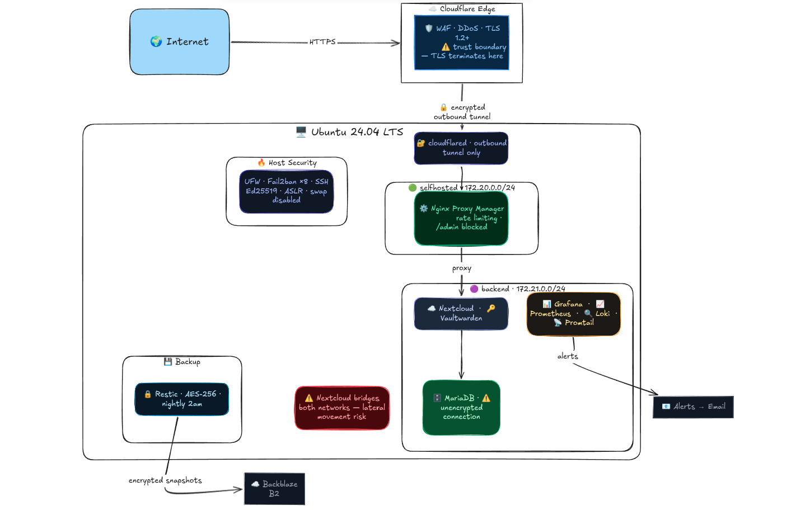
The Naive State — Before Hardening
The architecture above didn't always look like it does now. Before any hardening, every container, every config file, everything was running on defaults. I genuinely could not comprehend the number of attack vectors that opens up until I started going through each component one by one. Default configurations are optimized for usability and compatibility, not security. That became very obvious very fast.
Network Exposure
All containers were on a single flat Docker network with no segmentation whatsoever. A compromised Nginx container had direct network access to MariaDB, Vaultwarden, Prometheus, everything. No lateral movement needed, they were all just sitting next to each other.
No HSTS configured, meaning SSL stripping was possible. A user types vaultcabin.com, browser makes that first plain HTTP request before redirecting to HTTPS, attacker sitting in the middle intercepts it and serves plain HTTP forever. Credentials going out in plaintext and the user would never know.
No security headers anywhere. No X-Content-Type-Options, no X-Frame-Options, no content security policy. Cloudflare IP ranges weren't configured in Nginx either, meaning Fail2ban was reading the Docker gateway IP as the source of all traffic and banning Cloudflare's own IPs instead of real attackers. Essentially self inflicted denial of service on my own infrastructure the moment Fail2ban triggered.
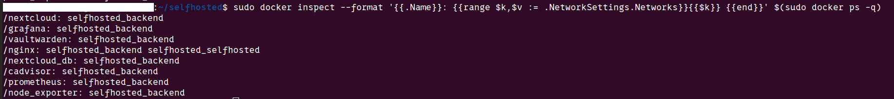
Access Control and Authentication
SSH was sitting on port 22, the first port every automated scanner on the internet checks. Password authentication was enabled, meaning anyone could just start guessing credentials. No login attempt limits, no lockouts, nothing stopping a basic credential stuffing script from running forever against it.
Nginx Proxy Manager's admin panel was sitting on port 81, publicly accessible, with default credentials of [email protected] and changeme. That panel controls every proxy host, every SSL certificate, every access rule for the entire infrastructure. Anyone who found it could redirect domains, strip SSL, expose internal services or just lock me out completely. It wasn't just an open door, it was the master key to everything.
No rate limiting on any service, public facing or internal. Nextcloud login, Vaultwarden login, all of it wide open to unlimited requests. No defense against brute force, no defense against someone hammering the login page with a wordlist all day. And beyond brute force, no rate limiting also means no defense against volumetric abuse. Someone could flood my services with junk requests and take everything down.
MariaDB had root@% configured, meaning remote root login was possible from any host. Default root password, no connection limits, no query restrictions, local_infile enabled meaning an attacker with SQL access could potentially read files off the host filesystem.
Information Disclosure
Nextcloud's /status.php was exposing the exact version number publicly with zero authentication. Version [REDACTED], visible to anyone who just hit that endpoint. That's a direct CVE lookup attack chain, no scanning needed. Hit the endpoint, get the version, search CVE database, know exactly what to try.
PHP version was leaking in HTTP headers, x-powered-by: PHP/[REDACTED] visible on every response. Same attack chain as the Nextcloud version, exact version visible, CVE database searchable, exploits mappable.
Application Vulnerabilities
ImageMagick (helper tool for Nextcloud) was fully unprotected and being used for all thumbnail generation. There were active CVEs including arbitrary code execution. Attack scenario is simple, upload a malicious image, Nextcloud passes it to ImageMagick for thumbnail processing, code execution inside the container. No format restrictions, no policy, nothing.
Vaultwarden's db.sqlite3 and rsa_key.pem had default permissions of 644, world readable. Any local user on the machine could copy both files and attempt offline vault decryption. The database has all encrypted passwords, the key file is what decrypts them. In this state, a local compromise of any container on the host provided a trivial path to full credential exfiltration.
Host and Container Security
Containers were running with no capability restrictions. Docker gives containers a default set of Linux capabilities and nobody was dropping any of them. cloudflared was running as root on top of that, meaning a vulnerability in the tunnel daemon meant immediate full system compromise, not just a contained escape.
Grafana's data directory was world writable at 777 and grafana.db was group readable. That database contains dashboards, users, data sources, API keys and alert rules. Anyone with access to this could map my infrastructure's topology with ease.
Visibility and Recovery
No centralised logging, no alerts, no monitoring. Logs scattered across individual containers with no way to correlate anything. An attacker could have been inside the network for days and there was no mechanism to detect it. I had zero visibility.
No backups. If anything went wrong, digitally or physically, the entire point of the project collapses. Files gone, passwords gone, no recovery path whatsoever.
Nobody configured them to be insecure, they just shipped that way because 'this should work and not break' was the priority when these tools were built. Going through each one of these is what the rest of this post is about.
Threat Modelling and Hardening
Once the infrastructure was running, I used STRIDE, a threat modelling framework that gives you six categories to think through for every component. Spoofing, Tampering, Repudiation, Information Disclosure, Denial of Service and Elevation of Privilege to systematically secure the infrastructure.
I went through all ten components. Cloudflare Tunnel, Nginx Proxy Manager, Nextcloud, Vaultwarden, MariaDB, Grafana, Prometheus, SSH, UFW and the Docker network layer. Sixty threat categories total. I went component by component, found the threats, fixed them on the spot and moved on.
SSH
First thing I touched. SSH on port 22 is background noise on the internet, every automated scanner hits it. Moved it to another port, not because obscurity is real security, but it drops off automated scan results on port 22 atleast and cuts log noise significantly.
Password authentication off completely. Key only, Ed25519. Modern elliptic curve, smaller keys, faster, more secure than RSA. Private key is passphrase protected so even if someone gets the file, they still need the passphrase to use it. PermitRootLogin no, AllowUsers user, no forwarding of any kind. LoginGraceTime 30s so half open connections don't linger. DebugBanner no strips the Ubuntu build string from the SSH banner so the OS isn't advertised on connection.
Kernel Parameters
I tweaked a few sysctl parameters that actually mattered.
kptr_restrict=2 hides kernel pointer addresses from everyone including root. Makes it significantly harder to build exploits against kernel vulnerabilities because the attacker can't read memory addresses. This is what confused Nmap's OS fingerprinting during testing. I found this quite funny that it reported Linux 5.0-5.7 when the actual kernel was something else. Kernel hardening actively defeating reconnaissance tools without me doing anything extra.
ICMP redirects disabled. They can be used to manipulate routing tables and redirect traffic through an attacker controlled path. rp_filter enabled to drop packets with spoofed source IPs. SYN flood protection via tcp_syncookies. ASLR verified enabled which randomizes memory layout making exploitation unreliable. Swap disabled so sensitive data like passwords and keys never gets written to disk as I have enough headroom RAM for my server.
Docker Containers
Every container got cap_drop: ALL with only the minimum capabilities added back. By default Docker gives containers capabilities they don't need. Dropping everything and adding back only what's required means if a container is compromised, the blast radius is as small as possible.
no-new-privileges: true across everything. Prevents processes inside a container from gaining more privileges than they started with, even if they find a SUID binary inside.
cloudflared was running as root. That's the entry point for all external traffic and a vulnerability there running as root means full system compromise, not a contained escape. Created a dedicated unprivileged system user and moved it there. Resource limits added to containers that were missing them. A attacked container with no limits can consume everything and bring the whole stack down.
Nginx and Rate Limiting
The admin panel was sitting on port 81 with default credentials, publicly accessible. That panel controls every proxy host, SSL certificate and access rule for the entire infrastructure. Removed it from the public tunnel entirely. Now only reachable via SSH tunnel from localhost.
Rate limiting zones were defined but never actually applied to login endpoints. Applied 3 requests per minute to Nextcloud and Vaultwarden login endpoints, with a burst of 3. After that, 429 for every other request.
Login protection ended up being three layers deep:
Layer 1: Nginx rate limiting (429 after burst)
Layer 2: Application built-in throttling
Layer 3: Fail2ban IP ban after threshold/status.php blocked so Nextcloud version is no longer publicly queryable. proxy_hide_header X-Powered-By so PHP version stops leaking. block-exploits.conf blocking common sensitive paths like /.env, /.git/config, /nginx-status.
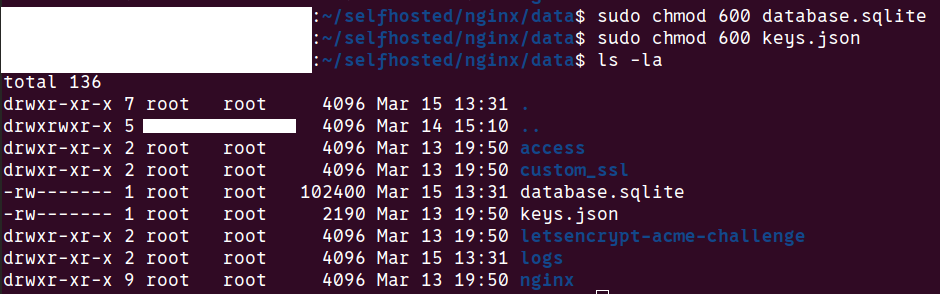
Fail2ban
Eight jails total covering SSH, Nginx, Nextcloud, Vaultwarden, Grafana and others. The critical fix here was that Fail2ban was banning Cloudflare's own IPs instead of real attackers. Nginx was logging the Docker gateway IP as the traffic source so every ban was landing on the wrong IP, essentially a self inflicted denial of service on my own infrastructure every time it triggered. Felt like I was in a rabbit hole but finally fixed by configuring Nginx to read the CF-Connecting-IP header Cloudflare passes through. Bans now land on actual attacker IPs.
Nextcloud needed its own custom jail. Nextcloud returns HTTP 200 even on failed logins, with the error in the response body. Standard jails looked for HTTP 401, so they were completely blind to every failed Nextcloud login attempt. Set up a custom regex filter to fix this.
TLS and Security Headers
TLS 1.0 and 1.1 disabled in Cloudflare, minimum TLS 1.2 enforced. This is what moved the testssl.sh grade from B to A.
HSTS configured with a six month max-age and includeSubDomains. Tells browsers to never make a plain HTTP request to vaultcabin.com or any subdomain for the next six months. Prevents SSL stripping where an attacker intercepts that first unencrypted request before the redirect to HTTPS kicks in.
CAA DNS records added restricting certificate issuance to Let's Encrypt only. Even if someone social engineers another certificate authority, they can't issue a valid cert for vaultcabin.com. X-Content-Type-Options: nosniff added to stop MIME type sniffing attacks.
Vaultwarden
This was one of the most alarming finding in the entire project. db.sqlite3 and rsa_key.pem both had default permissions of 644 — world readable. The database contains every encrypted password. The key file is what decrypts them. Having both readable means any local user on the machine could copy both files and attempt full offline vault decryption with zero evidence of access. Fixed both to chmod 600.
/admin panel found publicly reachable during testing. Blocked externally via Nginx. Now only accessible through an SSH tunnel, traffic never touches the internet.
Vaultwarden doesn't log successful vault logins at all. An attacker who gets in leaves zero trace in the application logs. Nginx access logs capture the HTTP requests which gives some trail, but there's no application level audit of what was actually accessed. Couldn't fix this, it's a Vaultwarden limitation. Filed a GitHub discussion proposing configurable audit logging and offered to contribute a PR in the future.
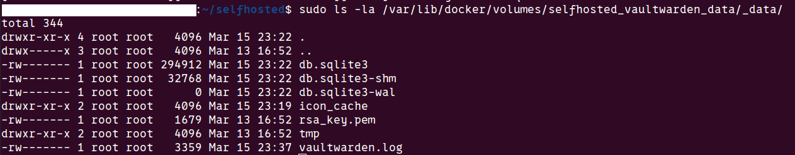
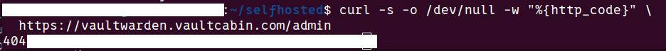
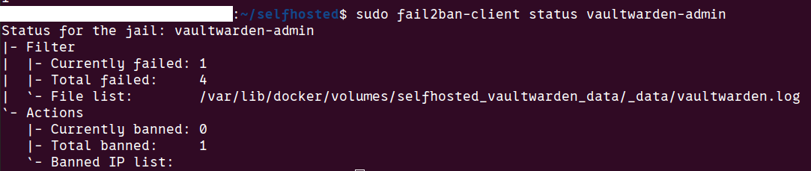
Nextcloud
/status.php was handing out the exact running version with zero authentication. Direct CVE lookup attack chain meaning hit the endpoint, get the version, search the database, know exactly what to try. Blocked via Nginx.
ImageMagick was the most critical finding. Three active CVEs including arbitrary code execution. Attack scenario: upload a malicious image, Nextcloud passes it to ImageMagick for thumbnail generation, code execution inside the container. Two mitigations layered. First, switched thumbnail generation to the GD library entirely so ImageMagick is no longer called for previews. Second, applied a security policy blocking formats like PS, EPS, PDF, SVG, MSL with resource limits of 256MB memory and 30 seconds processing time. I don't use these formats anyway. Made it persistent via a docker-compose volume mount so it survives container rebuilds. Verified both working.
No upload size limit meant an attacker could fill the 2TB SSD and take every container down. Set a 10GB file limit and 50GB user quota which I can change per my need.
Nextcloud sits on both Docker subnets because it needs to reach Nginx for incoming traffic and MariaDB for the database. That dual network presence means a compromised Nextcloud container can reach every other backend service directly. Documented as accepted risk, fixing it would require rearchitecting the network entirely.
MariaDB
root@% existed with a default password. Remote root login possible from any host. Deleted it, set strong credentials, restricted the Nextcloud database user to the backend subnet only. local_infile disabled to prevent file read attacks via SQL. Binary logging enabled for tamper detection. Connection limits set to 50 max connections, 10 per user, 300 second timeout to prevent resource exhaustion.
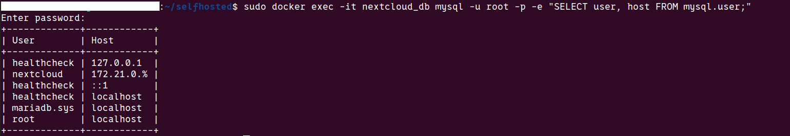
Accepted Risks
Not everything got fixed and I had to accept it.
UFW is not restricted to Cloudflare IPs only. The ideal hardening step here would be to whitelist only Cloudflare's IP ranges in UFW so nothing else can even reach port 80 and 443. I didn't do it because I'm on a university network with dynamic DHCP. Cloudflare's IP ranges also change occasionally. The defense in depth through other layers covers this well enough and I will change this once I get into a home network.
MariaDB to Nextcloud connection is unencrypted internally. Traffic between those two containers is plain, no TLS. I accepted this because that traffic never leaves the machine, it stays inside the backend Docker network. I accepted this for now but it's a real gap, not a dismissed one.
DAC_OVERRIDE capability is still present on Nextcloud and Vaultwarden. Ideally every container runs with zero capabilities. In practice Nextcloud needs DAC_OVERRIDE to manage file permissions across different users and Vaultwarden needs it for similar reasons. Removing it breaks both services. I tried, documented it as a gap and moved on.
VirtualBox is still installed on the host as this is my personal PC. I came to realize that every VirtualBox installation adds SUID binaries to the system and I have six of them. Each one is a potential privilege escalation vector if a vulnerability exists in any of them. The plan is to migrate to KVM which is built into the Linux kernel, needs no SUID binaries and is a significantly cleaner setup security wise.
Watchtower automatically updates all container images which sounds like a good thing until you think about it from a supply chain perspective. If any upstream image gets compromised and a malicious update gets pushed, Watchtower pulls and runs it automatically with zero review. The proper fix is pinning images to specific SHA256 digests instead of pulling latest blindly. For a personal homelab I accepted the convenience tradeoff but it's a real risk I will be fixing soon.
Understood and either has a planned fix or a clear reason why the tradeoff is acceptable right now. Coming to this point in time, I became clear that securing this system 100% was just not possible and I had to move on accepting what I just could not do.
Security Testing — Real Results
I ran automated tools against my system once I was done with STRIDE. This exposed my infrastructure through the lens of an attacker and I could close some more attack vectors.
Port Scanning — Nmap
First thing I did was scan my own public IP from outside.
nmap -sS -A -p- <public ip>Every single port came back filtered. All 65535 of them. The university firewall is dropping everything inbound so from the internet, my server is essentially invisible. No open ports, no fingerprint, nothing to attack directly. Services are only reachable through the Cloudflare Tunnel which uses outbound connections.
Then I scanned localhost to see what was actually running:
nmap -p- 127.0.0.1Open ports found:
[REDACTED] — SSH (expected, hardened)
11434 — Ollama (localhost only)
20241 — cloudflared metrics (localhost only)
43565 — containerd API (localhost only)Everything else — 80, 443, 81, 3000, 8080, 8081, 9090 filtered by UFW. No unexpected services, nothing that shouldn't be there.
The bonus finding here was that Nmap reported my OS as Linux 5.0-5.7. My actual kernel is [REDACTED] which we saw in kernel hardening section.
I also verified Ollama was properly isolated. From the host it's accessible on localhost. From inside a Docker container it times out completely. Different network namespace — 127.0.0.1 from a container isn't the same 127.0.0.1 as the host. Isolation confirmed.
TLS Audit — testssl.sh
./testssl.sh --severity HIGH --fast https://nextcloud.vaultcabin.comInitial grade: B
Not vulnerable to any of the major TLS CVEs — Heartbleed, POODLE, BEAST, CRIME, DROWN, FREAK, LOGJAM, ROBOT, SWEET32, RC4. All clean. Forward secrecy enabled. Certificate from Let's Encrypt, auto renewed by Cloudflare.
But two HIGH severity findings were capping the grade at B:
TLS 1.0 and 1.1 still offered. These are old protocol versions with known attacks. No reason to keep them. Fixed in Cloudflare dashboard, minimum TLS version set to 1.2.
HSTS missing. Without HSTS, SSL stripping is possible. Fixed — six month max-age with includeSubDomains configured in Cloudflare.
Two other findings worth noting:
PHP version leaking in x-powered-by header — fixed with proxy_hide_header X-Powered-By in Nginx.
CAA DNS record missing — meaning any certificate authority could technically issue a cert for vaultcabin.com. Added CAA records restricting issuance to Let's Encrypt only.
After fixes:
server: cloudflare ✅
x-powered-by: GONE ✅
x-content-type-options: nosniff ✅
strict-transport-security: max-age=15552000; includeSubDomains ✅Final grade: A
CVE Scanning — Trivy
sudo trivy image --severity HIGH,CRITICAL nextcloud:latestRan this across every image in the stack. Results:
| Image | HIGH | CRITICAL | Notes |
|---|---|---|---|
| nextcloud:latest | 86 | 0 | ImageMagick CVEs — mitigated |
| mariadb:10.11 | 4 | 1 | gosu binary — very low impact |
| vaultwarden:latest | 2 | 0 | glibc — awaiting image rebuild |
| nginx-proxy-manager | 165 | 3 | basic-ftp CVE — awaiting rebuild |
| prometheus:latest | 0 | 0 | Clean |
| grafana:latest | 0 | 0 | Clean |
The Nextcloud ImageMagick CVEs were the most critical finding, three of them including arbitrary code execution. Already mitigated by switching to GD library and applying the security policy. The CVEs still show in the scan because ImageMagick is still present in the image, just no longer reachable through Nextcloud.
Nginx Proxy Manager had 168 CVEs total including 3 CRITICAL. The most concerning was CVE-2026-27699, a basic-ftp path traversal with a fix available but the NPM image hasn't been rebuilt yet. Watchtower will auto-update when it is.
Most of the remaining CVEs across all images showed status "affected" with no fix version available yet. Patches not released upstream. Documented, accepted, monitoring for image rebuilds.
The important distinction I learned here is the difference between "affected" and "fixed" status. Prioritised the fixed ones, document the affected ones as accepted risk until upstream catches up.
Directory Fuzzing — ffuf
ffuf -w /usr/share/wordlists/dirb/common.txt -u https://nextcloud.vaultcabin.com/FUZZNextcloud came back clean. No hidden endpoints, no exposed admin panels, no backup files, no .git directory. The only things responding were expected — /login, index.php, robots.txt which correctly had Disallow: / blocking all indexing.
Vaultwarden had one finding:
/admin → 200The admin panel was publicly accessible. Protected by an argon2 hashed token and Fail2ban, but still reachable from the internet which means it's still an attack surface. Blocked it externally via Nginx, returns 404 now. Only accessible through SSH tunnel locally.
I knew the panel existed. I didn't think about whether it needed to be publicly reachable at all.
Rate Limiting Verification
Rate limiting zones were defined earlier but I wanted to verify they were actually working correctly. Sent repeated requests to the login endpoints and watched the responses.
Nextcloud /login:
Requests 1-4: 200/303 — burst allowed
Request 5+: 429 Too Many Requests ✅Vaultwarden /api/accounts/prelogin:
Requests 1-4: 200 — burst allowed
Request 5+: 429 Too Many Requests ✅Working as expected. Three layered defenses on every login endpoint i.e Nginx rate limiting, application built-in throttling and Fail2ban. An attacker has to get through all three before making any real progress on a brute force attempt.
The most useful thing about this whole testing phase wasn't the individual findings. It was the shift in perspective. Things that looked fine from the inside look very different from the outside.
Monitoring and Alerting
Grafana Dashboards
Three dashboards running. Node Exporter Full pulls host metrics from Prometheus. CPU per core, RAM, disk I/O, network traffic, system load. cAdvisor dashboard shows the same but per container, which container is eating memory, which is spiking CPU. The third is a custom security dashboard I built pulling from both Prometheus and Loki showing sudo commands run on the host, Fail2ban bans in real time, UFW blocked connections, Nextcloud failed logins and Vaultwarden admin panel attempts.
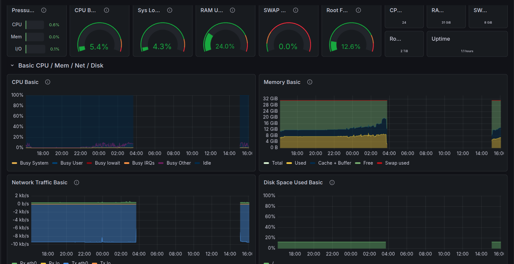
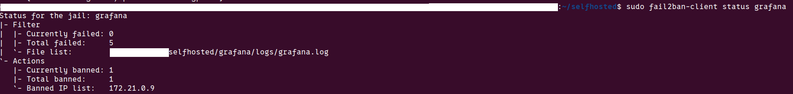
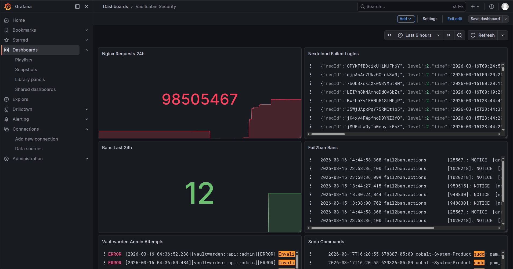
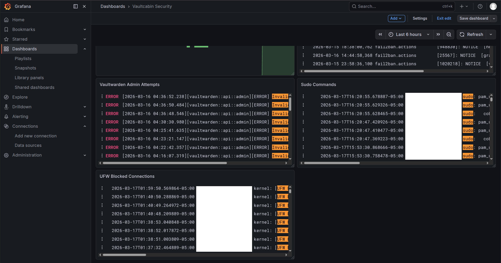
Loki Log Pipeline
Log sources → Promtail → Loki → GrafanaPromtail is collecting from ten sources — auth.log, fail2ban.log, ufw.log, Nginx access and error logs, Nextcloud, Vaultwarden, Grafana and all Docker containers. Everything lands in Loki, retained for 30 days. Before this, logs were scattered across individual containers with no way to correlate anything. Now it's all in one place and searchable.
Alerts and Email Notifications
Three alert rules wired to Gmail via SMTP:
- Disk usage above 80% — evaluates every minute, fires after 5 minutes sustained
- Service down — any of cadvisor, node exporter or prometheus goes below 1, fires within a minute
- Brute force detected — more than 10 failed auth attempts in 5 minutes, fires immediately
First real test of the alerting was finding that Prometheus couldn't scrape itself after I added basic auth, it was firing the service down alert constantly until I added the credentials to its own scrape config.
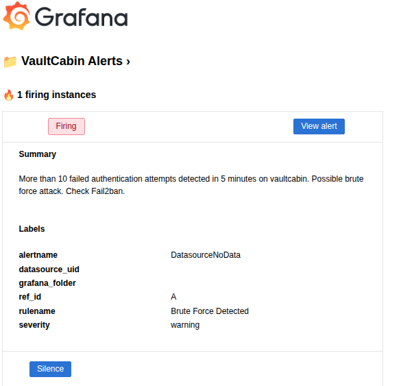
What I Know Is Still Broken
Cloudflare Trust Dependency
Every single byte of traffic in and out of this infrastructure passes through Cloudflare. TLS terminates there, they decrypt it, inspect it, re-encrypt it. I have no WAF, no DDoS protection and no ingress path without them. If Cloudflare goes down, everything goes down. If Cloudflare decides to terminate my account, everything goes down. If Cloudflare gets breached, my traffic was in their hands.
It's an architectural reality. I accepted it because I had no real alternative on a university network with no inbound connections and no capacity to run my own edge protection. But it's a single vendor dependency on the most critical part of the infrastructure.
Once I get into a home network, fix is a Wireguard VPN for direct access that removes the Cloudflare dependency for internal management at minimum.
Logs Are Not Immutable
Loki is storing 30 days of logs on the same machine it's monitoring. If an attacker compromises the host, the first thing a careful attacker does is delete the evidence. One rm -rf on the Loki data directory and 30 days of auth logs, Fail2ban bans, Nginx access logs, everything is gone. Breach investigation becomes impossible.
I learned that in a professional environment logs get shipped to a remote write once destination the moment they're generated. S3 with object lock, a managed SIEM, anything that exists outside the compromised machine. I don't have that. If this host gets owned, I'm investigating blind.
Email Alerts
Grafana is sending alerts to Gmail. Email is too slow, and my inbox feels flooded with spam. By the time I see a brute force alert in my inbox the attack might be over. Using Pushover, Gotify, a Telegram bot, Signal or something that actually interrupts you in real time would be ideal. This is on the to-do list.
No Proactive OOM Alerting
Resource limits are set on containers which is good. What's not good is that my alerting only tells me after a container gets OOM killed. By then the service is already down. I should have alerts firing when a container is approaching its memory limit — say 80% — not after it's already dead and users are getting errors. Current setup is reactive, not proactive which I have to work on.
Watchtower Supply Chain Risk
Watchtower automatically pulls and runs updated container images with no verification, no digest checking, no human review. The convenience is real but so is the risk. A compromised upstream maintainer account on Docker Hub pushing a malicious image update gets automatically deployed to my entire stack within hours. That's a supply chain attack with automatic execution built in.
The fix is image digest pinning — running nextcloud@sha256:abc123 instead of nextcloud:latest so you're running exactly what you verified. Updates become a conscious decision instead of an automatic one. Haven't done this yet.
MariaDB Unencrypted Internal Connection
Traffic between Nextcloud and MariaDB is plain unencrypted SQL on the backend Docker network. The "it never leaves the machine" argument only goes so far. A compromised container on the same subnet with enough effort could position itself to read that traffic like password hashes, file metadata, session tokens, all in plaintext. TLS on the MariaDB connection is the fix. Accepted for now, documented as a real gap.
Nextcloud Bridges Both Networks
Nextcloud sits on both the selfhosted and backend subnets because it needs to receive traffic from Nginx and talk to MariaDB. That dual network presence means a compromised Nextcloud container has a foot in both worlds and can reach every other backend service directly. The network segmentation that's supposed to contain blast radius is partially defeated by this single architectural requirement. Fixing it properly would mean rearchitecting how Nextcloud talks to MariaDB, possibly through an API layer or a dedicated database proxy.
No mTLS Between Internal Services
Containers on the backend subnet talk to each other over plain HTTP with no mutual authentication. Any container that gets compromised can impersonate any other service on the network. mTLS would mean every container presents a certificate, every connection is mutually authenticated and encrypted, and a compromised container can't pretend to be MariaDB or Vaultwarden to another service. It's complex to implement properly in a Docker environment and overkill for a homelab but it's a real gap and I'm not going to pretend otherwise.
DAC_OVERRIDE Still Present
Nextcloud and Vaultwarden both still have the DAC_OVERRIDE Linux capability. This capability lets a process bypass file permission checks. In a compromised container, it means the attacker can read files they shouldn't have access to. I tried removing it. Both services broke. It's a known gap with no clean fix available without upstream changes.
VirtualBox SUID Binaries
VirtualBox is still installed on the host and adds six SUID binaries to the system. SUID binaries run with elevated privileges regardless of who executes them. A vulnerability in any of those six is a local privilege escalation path to root. Migration to KVM is planned — it's kernel native, needs no SUID binaries and is architecturally cleaner. Just hasn't happened yet.
They're things I found, understood, documented and either couldn't fix within the scope of this project, am still working on to fix or made a conscious tradeoff decision about it.
What I Learned
I came into this project thinking I had a decent grasp on security. The gap between knowing and doing turned out to be larger than I expected. I became clear on the concepts that defaults are made to "Just work and not break" and not secure, Security is clearly a process and not a state and it is truly impossible to completely secure a system. You can never reach a complete secure state and that is the truth. STRIDE before attacking my system already helped me minimize 90% of the attack vectors that I closed and the rest came from actually pentesting it.
For anyone thinking of self hosting a cloud, Do it. But Do it Seriously. The truth I realized is that it isn't always better than using managed services. You won't end up perfectly securing the system. But, building it, realizing the gaps, patching it, breaking it and patching it again all that leading to realize you can never truly secure it and have to accept the tradeoff.
Just don't leave it on defaults.
References and Tools Used
| Tool | Purpose | Link |
|---|---|---|
| Nmap | Port scanning | nmap.org |
| testssl.sh | TLS audit | testssl.sh |
| Trivy | CVE scanning | aquasecurity.github.io/trivy |
| ffuf | Directory fuzzing | github.com/ffuf/ffuf |
| Restic | Encrypted backups | restic.net |
| Fail2ban | Intrusion prevention | fail2ban.org |
| Excalidraw | Architecture diagrams | excalidraw.com |
Do it Seriously.Just Don't leave it on defaults.